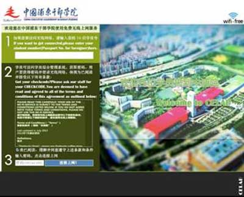

<style type="text/css">
	.guideline-network-account{
		width:100%;
	}
	.guideline-network-account-item{
		display:flex;
		display: -webkit-box;      /* OLD - iOS 6-, Safari 3.1-6 */
		display: -moz-box;         /* OLD - Firefox 19- (buggy but mostly works) */
		display: -ms-flexbox;      /* TWEENER - IE 10 */
		display: -webkit-flex;     /* NEW - Chrome */
		
		border-color: #ddd;
	    background-color: #fff;
	    color: #444;
	    position: relative;
	    z-index: 2;
	    margin: -1px;
	    padding: 16px;
	    border-width: 1px;
	    border-style: solid;
	    font-size: 16px;
	}
	.guideline-network-account-title{
		flex: 2;
		-webkit-box-ordinal-group: 2;   /* OLD - iOS 6-, Safari 3.1-6 */
		-webkit-box-flex: 2;            /* OLD - iOS 6-, Safari 3.1-6 */
		-webkit-order: 2;               /* NEW - Chrome */
		-webkit-flex: 2;                /* Chrome */
		
		text-align:right;
    	min-width: 6em;
    	vertical-align: middle;
	}
	.guideline-network-account-password{
		flex: 3;
		-webkit-box-ordinal-group: 3;   /* OLD - iOS 6-, Safari 3.1-6 */
		-webkit-box-flex: 3;            /* OLD - iOS 6-, Safari 3.1-6 */
		-webkit-order: 3;               /* NEW - Chrome */
		-webkit-flex: 3;                /* Chrome */
		
	    text-align: left;
	    word-break: break-all;
	    word-wrap: break-word;
	    vertical-align: middle;
	    margin-left:5px;
	    color:#F00;
	}
	.guideline-network-help1{
		max-width:80%;
	}
	.guideline-network-logo{
		margin:1em auto;
	}
	.item-block-title{
		text-align:left;
		font-weight:bold;
	}
	.item-no-eclipsis{
	    text-overflow: initial;
    	white-space: normal;	
    	text-align:left;
	}
</style>  
<ion-view title="WiFi账户">
    <ion-header-bar align-title="center" class="bar-assertive">
        <div class="buttons">
            <button class='button button-icon icon ion-ios-arrow-back' style='font-size:12px' ng-click='goBack()'></button>
        </div>
    </ion-header-bar>
    <ion-content overflow-scroll="true">
        <div style="text-align:center;">
        	<div class="guideline-network-logo">
	        	
	        	<div class="padding-top padding-bottom">校园无线网</div>
        	</div> 
        	
        	<table class="guideline-network-account">
        		<tbody style="width:100%">
					<tr class="guideline-network-account-item">
						<td class="guideline-network-account-title">无线上网账号:</td>
						<td class="guideline-network-account-password">{{wifiAccount.logname}}</td>
					</tr>
					<tr class="guideline-network-account-item">
						<td class="guideline-network-account-title">无线上网密码:</td>
						<td class="guideline-network-account-password">{{wifiAccount.password}}</td>
					</tr>
				</tbody>
			</table>
			<br/>
            <button style="width: 100%;border:none;" class="button button-my" ng-click="toggleNetworkHelpInfo()">上网帮助</button>
        	<div ng-show="networkHelpInfoState" >
	        	<div class="padding-top">
	        		<h2>
	        			免费无线上网
	        		</h2>
	        		<h3>
	        			使用指南
	        		</h3>
	        	 
	        	</div>

                <div class="item item-button-right agreement-title " ng-click="goGGList()">
                    准备
                </div>
	        	<!--<div class="item-block-title padding-top padding-left">准备</div>-->
	        	<ion-list>
					<ion-item class="item item-no-eclipsis padding-left padding-right">
							1.您所使用的终端必须支持无线上网功能，同时该设备必须安装有一个可用的浏览器。
					</ion-item>
					<ion-item class="item item-no-eclipsis">
					  		2.打开您所使用终端的无线上网功能，搜索并连接名为“CELAP”的无线热点，如您在设备所显示的无线热点列表内无法看到此热点名称，请尝试再次搜索。如依然无法找到该热点，请拨打分机<a href="tel:02128288000">8000</a>电话咨询。
					</ion-item>
					<ion-item class="item item-no-eclipsis">
							3.连接到“CELAP”热点后，打开您的浏览器并访问任意网址，根据您所使用的设备不同，浏览器将自动跳转到认证页面
							<div style="margin:0 auto;text-align:center;">
								
							</div>
					</ion-item>
				</ion-list>
                <div class="item item-button-right agreement-title"  ng-click="goGGList()">
                    填写用户名
                </div>
				
	        	<ion-list >
					<ion-item class="item item-no-eclipsis">
						4.如您是第一次使用中国浦东干部学院的免费无线网络服务或者之前的认证信息已经失效，请在标注为1输入框内输入您的学员号。如你没有学员号请咨询您在学院的联系人。
					</ion-item>
			    </ion-list>
                <div class="item item-button-right" style="background:#f3f3f3;border:none;padding-right:10px;text-align:left;" ng-click="goGGList()">
                    获取密码
                </div>
			    
	        	<ion-list >
					<ion-item class="item item-no-eclipsis">
						5.如您是第一次使用中国浦东干部学院的免费无线网络服务，请登录学员综合管理系统，在系统首页获取您的无线上网密码。
					</ion-item>
					<ion-item class="item item-no-eclipsis">
						6.如您没有上网密码,请咨询您在学院的联系人。					
					</ion-item>
			    </ion-list>
                <div class="item item-button-right agreement-title" ng-click="goGGList()">
                    连接到互联网
                </div>
			    
	        	<ion-list >
					<ion-item class="item item-no-eclipsis">
						7.如您依然保留着在有效期内的密码，请直接在标注为3的输入框内输入您的密码并点击“连接上网！”按钮，您可以开始访问任意网址。
					</ion-item>
					<ion-item class="item item-no-eclipsis">
						8.请将获取到的8位无线上网密码填写到认证页面内标注为3的密码输入框内，并点击“连接上网！”按钮，浏览器将自动跳转到中国浦东干部学院无线网络欢迎网站，您可以在中国浦东干部网站上获知相关信息，同时您可以开始访问任意网址。					
					</ion-item>
			    </ion-list>
                <div class="item item-button-right" style="background:#f3f3f3;border:none;padding-right:10px;text-align:left;" ng-click="goGGList()">
                    其他说明
                </div>
			   
	        	<ion-list >
					<ion-item class="item item-no-eclipsis">
						9.如您使用的是没有内置浏览器的电子书类终端，很抱歉我们无法为您提供服务。
					</ion-item>
					<ion-item class="item item-no-eclipsis">
						10.中国浦东干部学院所提供的免费无线网络服务暂时没有任何使用时间的限制，您所收到的密码有效期为在校期间。同时请勿随意将密码共享给他人使用，否则您有可能需要为他人承担网络行为上的过失连带责任。					
					</ion-item>
			    </ion-list>
                <div class="item item-button-right agreement-title" ng-click="goGGList()">
                    技术热线
                </div>
	        	<ion-list >
					<ion-item class="item item-no-eclipsis">
						技术热线：<a href="tel:02128288000">28288000</a>
					</ion-item>
			    </ion-list>
        	</div>
    </ion-content>
</ion-view>
